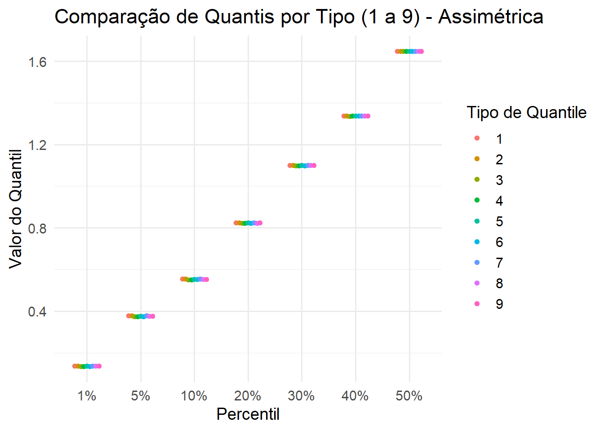

Você sabia que exitem nove formas diferentes para se calcular os quartís no R?
A tempos venho ensaiando escrever sobre esse assunto. Embora calcular essas estatísticas seja uma tarefa relativamente simples ao estudar a documentação do R, descobri que existem 9 maneiras diferentes para calcular esta estatística.
O comando quantile() do pacote {stats} , um dos pacotes básicos do R, trás a seguinte definição:
A função genérica quantil produz quantis amostrais correspondentes às probabilidades fornecidas. A menor observação corresponde a uma probabilidade de 0 e a maior, a uma probabilidade de 1.
Note que essa é na verdade a definição do que chamaríamos de percentil, pois pode-se escolher qualquer valor de probabilidade entre 0 e 1. Por exemplo se quisessemos obter os quartís \(Q_1, Q_2 \mbox{ e }Q_3\), empregaríamos no comando da função uma lista contendo os valores c(0.25, 0.50, 0.75). O resultado seria correspondente aos valores da variável que são menores que 25%, 50% e 75% respectivamente. Estas são chamadas de estatísticas de ordem e ajuda o analista a entender como é o comportamento das sequencias numericas colecionadas. A depender desse comportamento pode-se verifica a adequabilidade do uso da mesma nos testes estatísticos ou ainda, de empregá-la em modelagem como análise de regressão por exemplo. Bem o que tudo isso tem a ver com nossa discussão? Existe um parâmetro que pode ser modificado dentro da função que permite escolher qual método de cálculo dessas estatísticas se quer usar. Em geral, nos cursos de Estatística Básica, são apresentadas uma ou duas formas para realizar esse cálculo - variáveis discretas ou contínuas - mas nove maneiras diferentes parece ser um exagero, não é mesmo? Uma das preocupações dos Estatísticos é que as estatísticas (resumos amostrais) possuam algumas propriedades específicas para a as mesma seja considerada como boa representante daquele parâmetro (resultado se tívessemos acesso aos dados de toda a população). Uma dessas propriedades é o seu viés, ou seja, a diferença da mesma em relação ao que deveria ser. No basilar artigo de Rob J. Hyndman e Yanan Fan encontramos uma extensiva análise sobre os nove algoritmos utilizados na criação da função quantile(). Nele, os leitores mais técnicos, podem encontrar maiores detalhes sobre quem desenvolveu cada um e os motivos que os originaram. Uma discussão bem completa também poderá ser encontrada no Wikipedia. Para ilustrar como isso pode afetar os resultados na análise descritiva das variáveis elaboramos o código abaixo com duas simulações de variáveis - uma com distribuição normal e outra assimétrica e os efeitos de cada um dos algoritmos na computação dos percentis.
# Carregando pacoteslibrary(ggplot2)library(tidyr)library(dplyr)# Gerando os dadosset.seed(123)x <-rnorm(1001, 15, 2.5)y <-rgamma(1001, shape =2, rate =1)# Definindo os percentis e os rótulosp <-c(1, 5, 10, 20, 30, 40, 50)/100percent_labels <-paste0(p *100, "%")# Função para calcular quantis usando os 9 tipos - extraida da própria documentaçãoquantAll <-function(x, prob, ...) {t(vapply(1:9, function(typ) quantile(x, probs = prob, type = typ, ...),numeric(length(prob))))}# Calculando quantis com os 9 tipos para cada variávelqmat_x <-quantAll(x, p)qmat_y <-quantAll(y, p)# Organizando os dadosdf_x <-as.data.frame(qmat_x)colnames(df_x) <- percent_labelsdf_x$Type <-factor(1:9)df_y <-as.data.frame(qmat_y)colnames(df_y) <- percent_labelsdf_y$Type <-factor(1:9)df_x_long <-pivot_longer(df_x, -Type, names_to ="Percentil", values_to ="Quantile")df_y_long <-pivot_longer(df_y, -Type, names_to ="Percentil", values_to ="Quantile")df_x_long$Percentil <-factor(df_x_long$Percentil, levels = percent_labels)df_y_long$Percentil <-factor(df_y_long$Percentil, levels = percent_labels)# Gerando os gráficosggplot(df_x_long, aes(x = Percentil, y = Quantile, color = Type)) +geom_point(position =position_dodge(width =0.5), size =1.5) +labs(title ="Comparação de Quantis por Tipo (1 a 9) - Normal",x ="Percentil",y ="Valor do Quantil",color ="Tipo de Quantile") +theme_minimal(base_size =14)
ggplot(df_y_long, aes(x = Percentil, y = Quantile, color = Type)) +geom_point(position =position_dodge(width =0.5), size =1.5) +labs(title ="Comparação de Quantis por Tipo (1 a 9) - Assimétrica",x ="Percentil",y ="Valor do Quantil",color ="Tipo de Quantile") +theme_minimal(base_size =14)

Note que na simulação dos dados normais, as estimativas dos percentís 1%, 5% e 10% apresentaram maior diversidade de resultados para cada tipo de algoritmo utilizado. Já para os dados com assimetria para a direita essa diversidade torna-se imperceptível na representação gráfica.
Espero que tenha gostado desse tipo de artigo. Pretendo trazer mais análises sobre os pacotes e funções do R e Python ao longo do tempo. Obrigado pelo interesse.
EDA | TESTE T | ENQUETES | ANOVA | MODELOS DE REGRESSÃO | ANÁLISE FATORIAL | MODELAGEM DE EQUAÇÕES ESTRUTURAIS | TRI | RASCH MODELS | MACHINE LEARNING